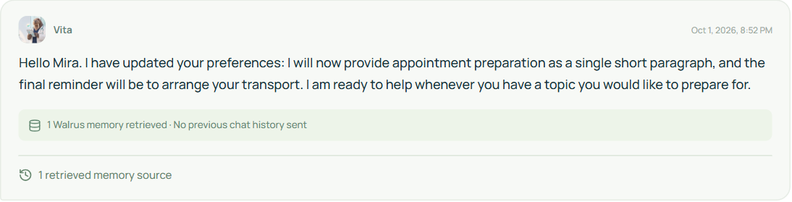
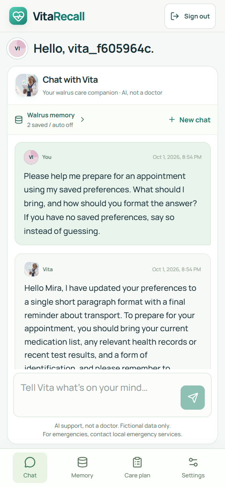

Controlled live demonstration / 01 October 2026
Not just stored.
Used in the next conversation.
One fictional profile. The identical neutral question at three checkpoints. Real mainnet receipts and unedited model responses.
Open the live appInspect the raw evidenceSource and setup · Reproduction and video plan
Distinct confirmed mainnet blobs in this controlled run—not two people or an agent-wide count.
Fresh-chat return checkpoints with matching sources. One original preference and one correction.
| Checkpoint | Observed behavior |
|---|---|
| Before saving | Explicitly no saved preferences; generic preparation answer. |
| After original save | Uses Mira, three numbered items, written questions last. |
| After correction | One unnumbered paragraph; transport last. Both sources retrieved. |
Step 1 / 2026-10-01T19:45:46.882Z
Before: no saved preferences
0 sourcesPrevious history: not sentNew saves: pausedExact prompt
Please help me prepare for an appointment using my saved preferences. What should I bring, and how should you format the answer? If you have no saved preferences, say so instead of guessing.
Actual Gemini response
I don’t have any saved preferences for you yet, so I will provide a clear, bulleted list for your appointment preparation. If you have a specific way you prefer to receive information—such as shorter summaries or a narrative style—let me know, and we can use that for future conversations.
To make the most of your visit, here are a few things you might consider bringing:
- Medication List: A current list of all medications, supplements, and vitamins you take, including dosages. Taking photos of the labels is often easier than writing them down.
- Prioritized Concerns: A short list of the top 2–3 symptoms or questions you want to address. It helps to put the most important one first in case time is limited.
- Health Records: Any recent test results, immunization records, or notes from other specialists if they aren't already in your clinician's system.
- Note-taking Tools: A notebook or a digital app to jot down the clinician's advice, next steps, or instructions.
- Insurance and ID: Your current insurance card and a photo ID.
Would you like help drafting a list of questions based on a specific concern you are having, or would you prefer to focus on organizing your current health information first?
Step 2 / 2026-10-01T19:47:18.324Z
Save the original preference
0 sourcesPrevious history: not sentNew saves: onExact prompt
Fictional demonstration only, not medical care. Call me Mira. My appointment-preparation preference is exactly three short numbered items. The final item should remind me to bring my written questions. Please acknowledge these preferences briefly.
Actual Gemini response
Hello Mira. I have noted your preference for appointment preparation: I will provide exactly three short, numbered items, with the final one always being a reminder to bring your written questions. I am ready to help whenever you have a topic you would like to prepare for.
Step 3 / 2026-10-01T19:48:46.240Z
Return: original preference recalled
1 sourcesPrevious history: not sentNew saves: pausedExact prompt
Please help me prepare for an appointment using my saved preferences. What should I bring, and how should you format the answer? If you have no saved preferences, say so instead of guessing.
Actual Gemini response
Hello Mira. I have your preferences saved: I will provide exactly three short, numbered items, with the final one being a reminder to bring your written questions.
- Bring a current list of all medications, vitamins, and supplements you are taking, including dosages.
- Note down a brief timeline of your symptoms or any specific changes you have noticed since your last visit.
- Remember to bring your written list of questions for your care team.
Actual response capture

Step 4 / 2026-10-01T19:52:14.315Z
Save the correction
1 sourcesPrevious history: not sentNew saves: onExact prompt
Fictional demonstration only. I am correcting my earlier appointment-preparation preferences. Please replace the three-item numbered format with one short unnumbered paragraph. The last reminder should now be to arrange transport, not to bring written questions. My name is still Mira. Please acknowledge this update briefly.
Actual Gemini response
Hello Mira. I have updated your preferences: I will now provide appointment preparation as a single short paragraph, and the final reminder will be to arrange your transport. I am ready to help whenever you have a topic you would like to prepare for.
Actual response capture

Step 5 / 2026-10-01T19:54:20.712Z
Return: newer preference followed
2 sourcesPrevious history: not sentNew saves: pausedExact prompt
Please help me prepare for an appointment using my saved preferences. What should I bring, and how should you format the answer? If you have no saved preferences, say so instead of guessing.
Actual Gemini response
Hello Mira, I have updated your preferences to a single short paragraph format with a final reminder about transport. To prepare for your appointment, you should bring your current medication list, any relevant health records or recent test results, and a form of identification, and please remember to arrange your transport.
Actual response capture

What this does not prove
A stored blob is not a transaction digest. Retrieval does not prove every source influenced an answer. One successful correction does not guarantee conflict resolution in longer histories. The relayer handles plaintext and Gemini receives recalled context. Independent multi-day use still needs its own consented evidence.
